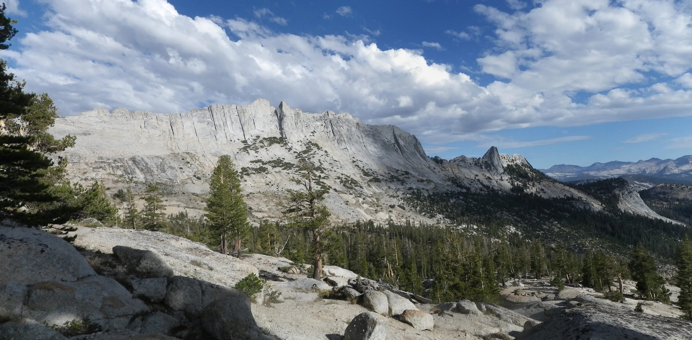

Climbing Life Lessons: Failure
Posted on Mon 17 February 2025 in Climbing Life Lessons
Life Lessons from Failure
- Failure is inevitable, learn if you can
- Prepare & know your competencies
- Value the experience of others
- Show the proper humility & respect
Failure is inevitable
It's important to accept that mistakes happen to everyone. If we're lucky, and the consequences aren't terrible, we have a chance to learn something. Then our mistakes aren't what define us, it's how we handle them that matters. Thinking back I've had lots of chances to learn from my mistakes on the rock, in the backcountry, and even in the gym, so I guess I've been pretty lucky. I think my climbing failures come in four flavors:
- unknown risk
- inexperience & insufficient skill
- carelessness
- hubris
Matthes Crest
One of my earliest climbing experiences was on Matthes Crest in the spectacular high country between Tuolumne Meadows and above Yosemite Valley.

Image credit: Yosemite Climbing AssociationUnfortunately, our traverse of this magnificent route was cut short when I fell a small distance landing on my back on some rocks. It knocked the wind out of me, and I bruised my ribs bad enough that it was hard to breathe. I was so embarrassed that I couldn't stop laughing which was also painful. What happened? Why did I fall on such an easy route? I think I can chalk this up to a combination of unknown risk, inexperience, carelessness, and hubris. I had never climbed outdoors before, and falling wasn't my only mistake on this route. I also lost my belay device which fell off my locking carabiner that either wasn't locked or somehow unscrewed itself. There wasn't a lot of exposure where I fell, but I failed to evaluate the risk and decided on a risky boulder move, without considering the consequences. I was clearly careless, and I think I was overconfident. The rock is merciless and quick to deal out stern lessons whether you have the aptitude to learn from them or not.
Another climber also injured on Matthes Crest offered this piece of wisdom in an AAC incident report:
One lesson is: no matter how easy the climb is you have to pretend it’s the hardest thing you ever did.
Sons of Yesterday + Serenity Crack
The most terrifying fall I ever had was on the rappel between Sons of Yesterday and Serenity Crack. A similar incident was reported in this article in Climbing Magazine: "Five Preventable Yosemite Climbing Accidents":
Multiple such incidences have occurred at this location, sometimes injuring the party.
In my story however the climber ahead of me also spun out of control, so I had warning that I would be working against gravity to make it to the anchors, but I didn't have the skill or experience to avoid spinning out of control and over the edge. Luckily, the first climber, had already tied the rope ends to the anchor, and my helmet kept me safe, but I still bashed my hand and fingers and ripped open a large gash on the back of my shoulder. I still consider how lucky I am to be alive, and that I had a more experienced climber with me.
The Warm Up Wall, Owens River Gorge
The most painful and embarrassing fall was near Bishop at a popular climbing area that I have been to many, many times. I was careless and foolish, being silly, talking too much, and not paying close attention while on lead, and before I knew it I'd slipped, fell a short distance, and hit a ledge twisting my ankle and nearly flipping before being caught by my last piece of protection. I felt like the climbing gods had struck me down for disrespecting them, and I deserved it.
The Gym
My most recent injury happened bouldering at the gym. Having been stymied all night because I am so horribly out of shape, I insisted on topping out on a high ball after already downclimbing because I didn't feel safe. I wish I'd followed that first instinct, because on my second attempt, I was too tired to downclimb and dropped several feet to the mat, losing my balance and landing badly on my arm which twisted at my elbow. Later while icing my elbow, I saw someone else top out, and realized there were rungs set next to the route to easily downclimb to a safe height before dropping. I really wish I had scoped out that landing better or talked to some other climbers before attempting it the second time. Many months later, my arm still hurts, and I had several visits to doctors and x-rays to make sure nothing was broken. This lesson was a bitter pill to swallow, after climbing for so many years, that I still had so much more to learn.
Lessons Learned
Be prepared for the risk. Learn what skills are required and know your competencies. Go with more experienced climbers, listen to them, and follow what they do. Pay attention, be serious, and don't fool around. Don't be afraid to back off of a climb for safety, even at the gym. Scope out your approach, your route, your landing, and your descent carefully before committing. Talk with others and get the beta. And when accidents happen, take the time to do the hard work to learn from them, bounce back, and then keep climbing!